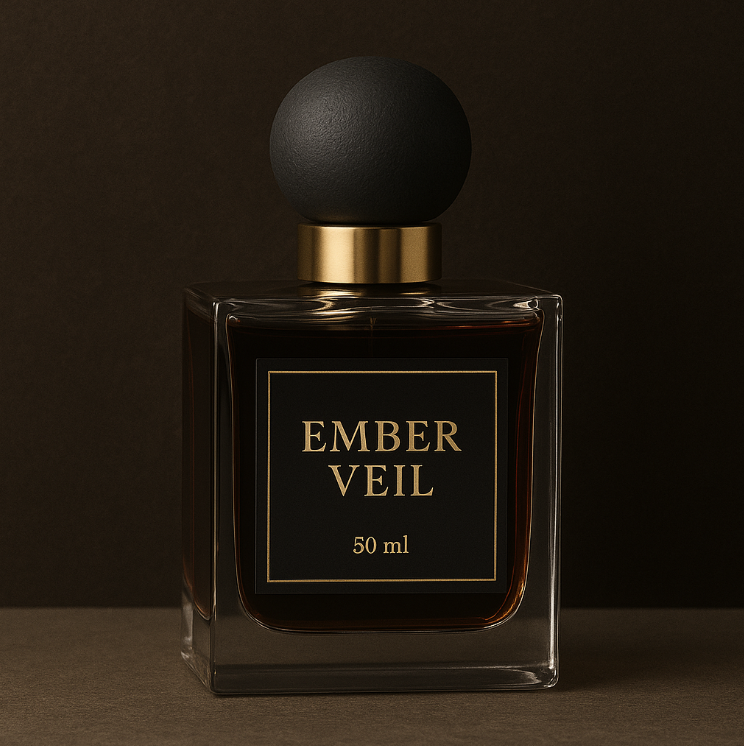

← Zurück zur Übersicht

Ember Veil
145CHF / 50 ml
Beschreibung
Ember Veil umhüllt Sie mit rauchiger Eleganz. Holzige und würzige Akzente verschmelzen zu einem sophistizierten Duft, der Stärke und Raffinesse ausstrahlt.
Duftnoten
Kopfnote: Schwarzer Pfeffer, Wacholder, Grapefruit
Herznote: Räuchereiche, Vetiver, Lavendel
Basisnote: Patchouli, Leder, Tabak
Charakter
Rauchig, maskulin, sophisticated